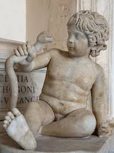

Hércules (como era conhecido entre os romanos e como é mais conhecido atualmente) ou Herácles (como era chamado pelos gregos) é um dos personagens mais conhecidos da mitologia grega, sendo marcado como um herói de grande força física. Essa força somada à coragem desse herói fez com que ele realizasse inúmeras façanhas consideradas impossíveis para homens comuns.
Hércules, além de herói, era um semideus, pois era filho de um deus olímpico Zeus, deus do trovão e dos céus junto de uma mulher mortal Sua mãe era uma mulher chamada Alcmena. Hércules também teve um pai adotivo, Anfitrião, marido de sua mãe
durante guerra de Tebas, anfitrião como rei teve que partir junto de seus soldados, zeus, que já queria posuir Alcmena, se disfarçou como seu marido, e no fim se revelou como zeus, ao voltar da guerra anfitrião duvidou da fideldade de sua esposa, logo ela revela que foi esolhida por zeus, anfitrião a o contrario do que se esperava, adorou a o fato de sua mulher ter engravidado de zeus e aceitou o garoto como seu filho, inclusive e assim que se origina a palavra anfitrião: aquele que recebe em sua casa
porém devo lembrar você que o nascimento de Hércules foi fruto de um caso extraconjugal de Zeus. Isso porque Zeus também era casado com Hera, deusa das mulheres e do casamento. Hera, além disso, era bastante ciumenta por conta das frequentes traições de seu marido. Assim, existem diversos casos de Hera procurando vingar-se das amantes de Zeus. Contra Alcmena, Hera retardou o nascimento de Hércules, e, depois que o herói nasceu, foi perseguido em diversos momentos pela esposa de Zeus. Logo após Hércules nascer, Hera enviou duas serpentes para matá-lo em seu berço, mas o herói, demonstrando sua força, matou as duas cobras esganadas,sabendo disso herá já começou a planejar sua proxima vingança, mas Athena descobre, e por pena conta a Zeus, que proibe Hera de tocar em Hércules, então percebendo da dificuldade que seria enfrentar ele, decide que é melhor esperar atacar nas sombras
Nosso heroi creseu,e se tornou m general de guerra, além disso Hércules casou-se com Mégara, filha do rei de Tebas, Creonte, e com ela constituiu família, tendo diversos filhos, e foi onde o plano de Hera entra em ação, ela enfeitiça Hércules e o faz crer que haviam 4 monstros atacando sua casa, ele enfrenta os 4, porém o feitiço se disipa, e ele percebe o que fez que havia matado sua esposa e filhos
para se redimiro heroi vai até um oracúlo, e busca redenção, segundo o oracúlo, Hércules deve fazer 12 trabalhos escolhidos por seu primo invejoso Euristeu que escolheu a dedo as mais dificeis tarefas e elas são